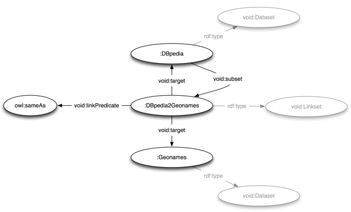

Abstract
VoiD is an RDF Schema vocabulary for expressing metadata about RDF datasets. It is intended as a bridge between the publishers and users of RDF data, with applications ranging from data discovery to cataloging and archiving of datasets. This document is a detailed guide to the VoID vocabulary. It describes how VoID can be used to express general metadata based on Dublin Core, access metadata, structural metadata, and links between datasets. It also provides deployment advice and discusses the discovery of VoID descriptions.
Status of this Document
This section describes the status of this document at the time of its publication. Other documents may supersede this document. A list of current W3C publications and the latest revision of this technical report can be found in the W3C technical reports index at http://www.w3.org/TR/.
The document is submitted for consideration to the W3C's Semantic Web Interest Group (SWIG) to publish it as a W3C Interest Group Note. The SWIG does not expect this document to become a W3C Recommendation.
Publication as an Editor's Draft does not imply endorsement by the W3C Membership. This is a draft document and may be updated, replaced or obsoleted by other documents at any time. It is inappropriate to cite this document as other than work in progress.
Feedback on this document is welcome - please send comments to semantic-web@w3.org (with public archive). Additionally, we encourage to use the VoID issue tracker to record and track comments.
The IPR status of information provided in this document is in accordance with Section 6 of the W3C Patent Policy. Disclosure obligations of the Participants of this group are described in the SWIG charter.
A first version of this document was developed and published by the authors, starting in 2008. This is an extended and improved version, based on community feedback received since the original publication.
Table of Contents
-
1. Introduction
- 1.1 Scope
- 1.2 Document conventions
- 1.3 Definition: Dataset
- 1.4 Definition: Linkset
-
2. General dataset metadata
- 2.1 Web page links
- 2.2 Basic Dublin Core metadata
- 2.3 Contact Information
- 2.4 Announcing the license of a dataset
- 2.5 Categorizing datasets by subject
- 2.6 Technical features
-
3. Access metadata
- 3.1 Resolvable HTTP URIs
- 3.2 SPARQL endpoints
- 3.3 RDF data dumps
- 3.4 Root resources
- 3.5 URI lookup endpoints
- 3.6 OpenSearch description documents
-
4. Structural metadata
- 4.1 Example resources
- 4.2 Patterns for resource URIs
- 4.3 Vocabularies used in a dataset
- 4.4 Describing partitioned datasets
- 4.5 Partitioning a dataset based on classes and properties
- 4.6 Providing statistics about datasets
-
5. Describing linksets
- 5.1 Naming a linkset's two target datasets
- 5.2 Linksets as part of larger datasets
- 5.3 Stating the link predicate of a linkset
-
6. Deploying VoID descriptions
- 6.1 Choosing URIs for datasets
- 6.2 Publishing a VoID file alongside a dataset
- 6.3 Multi-document datasets and backlinks
- 6.4 Describing RDF dumps
- 6.5 Using VoID with the SPARQL Service Description Vocabulary
-
7. Discovering VoID descriptions
- 7.1 Discovery via links in the dataset's documents
- 7.2 Discovery with well-known URI
-
8. Index of VoID classes and properties
-
9. Acknowledgements
-
References
1. Introduction
The Vocabulary of Interlinked Datasets (VoID) is concerned with metadata about RDF datasets. It is an RDF Schema vocabulary that provides terms and patterns for describing RDF datasets, and is intended as a bridge between the publishers and users of RDF data. VoiD descriptions can be used in many situations, ranging from data discovery to cataloging and archiving of datasets, but most importantly it helps users find the right data for their tasks.
VoiD covers four areas of metadata:
Deployment and discovery of VoID descriptions is discussed as well.
1.1 Scope
This document is one of the two core documents of VoID; the other is the VoID vocabulary definition [VOID-VOC].
This document is aimed at both dataset publishers (those involved in maintaining, administering and hosting datasets), and data users (those involved in finding, querying, crawling and indexing datasets).
Readers of this document should be familiar with the core concepts of RDF [RDF-PRIMER] and RDF Schema [RDFS]. Knowledge of the Turtle syntax [TURTLE] for RDF is required to read the examples. Some knowledge of widely-used vocabularies (Dublin Core [DC], Friend of a Friend [FOAF]) is also assumed.
1.2 Document conventions
All examples in this document are written in the Turtle RDF syntax [TURTLE]. Throughout the document, the following namespaces are used:
@prefix void: <http://rdfs.org/ns/void#> .
@prefix rdf: <http://www.w3.org/1999/02/22-rdf-syntax-ns#> .
@prefix rdfs: <http://www.w3.org/2000/01/rdf-schema#> .
@prefix owl: <http://www.w3.org/2002/07/owl#> .
@prefix xsd: <http://www.w3.org/2001/XMLSchema#> .
@prefix dcterms: <http://purl.org/dc/terms/> .
@prefix foaf: <http://xmlns.com/foaf/0.1/> .
@prefix wv: <http://vocab.org/waiver/terms/norms> .
@prefix sd: <http://www.w3.org/ns/sparql-service-description#> .
Furthermore, we assume that the empty prefix is bound to the base URL of the current file like this:
@prefix : <#> .
This allows us to quickly mint new identifiers in the local namespace: :MyDataset, :DBpedia and so on. Later sections of this specification provide more guidance on deploying VoID descriptions.
1.3 Definition: Dataset
The fundamental concept of VoID is the dataset. A dataset is a set of RDF triples that are published, maintained or aggregated by a single provider. Unlike RDF graphs, which are purely mathematical constructs [RDF-CONCEPTS], the term dataset has a social dimension: We think of a dataset as a meaningful collection of triples, that deal with a certain topic, originate from a certain source or process, are hosted on a certain server, or are aggregated by a certain custodian. Also, typically a dataset is accessible on the Web, for example through resolvable HTTP URIs or through a SPARQL endpoint, and it contains sufficiently many triples that there is benefit in providing a concise summary.
Since most datasets describe a well-defined set of entities, datasets can also be seen as a set of descriptions of certain entities, which often share a common URI prefix (such as http://dbpedia.org/resource/).
In VoID, a dataset is modelled as an instance of the void:Dataset class. Such a void:Dataset instance is a single RDF resource that represents the entire dataset, and thus allows us to easily make statements about the entire dataset and all its triples.
The relationship between a void:Dataset instance and the concrete triples contained in the dataset is established through access information, such as the address of a SPARQL endpoint where the triples can be accessed.
The following example declares the resource :DBpedia as a void:Dataset:
:DBpedia a void:Dataset .
The resource is intended as a proxy for the well-known DBpedia dataset [DBPEDIA]. A good next step would be to make this unambiguously clear by adding general metadata and access metadata to the resource.
1.4 Definition: Linkset
VoID also allows the description of RDF links between datasets. An RDF link is an RDF triple whose subject and object are described in different datasets.
A linkset is a collection of such RDF links between two datasets. It is a set of RDF triples where all subjects are in one dataset and all objects are in another dataset. RDF links often have the owl:sameAs predicate, but any other property could occur as the predicate of RDF links as well.
In VoID, a linkset is modelled as an instance of the void:Linkset class. void:Linkset is a subclass of void:Dataset.
The following example declares the resource :DBpedia_Geonames as a void:Linkset:
:DBpedia_Geonames a void:Linkset .
The resource is intended as a proxy for a set of triples that link resources in the DBpedia [DBPEDIA] and Geonames [GEONAMES] datasets. A good next step would be to make this clear by stating that these two datasets are the targets of the linkset.
Links are sometimes published as part of a larger dataset. For example, many of the resources described in the DBpedia dataset are linked via owl:sameAs to other datasets. In other cases, linksets are handled as stand-alone sets of triples, independently from either of the two linked datasets. For example, link generation tools such as Silk [SILK] can discover new links between two existing datasets. Both cases—linksets published as part of a larger dataset, and linksets that are independent from the linked datasets—can be described in VoID.
Note: rdf:type statements are not considered links for the purposes of VoID, even though subject and object typically reside on different domains. VoiD has a dedicated mechanism for listing the classes used in a dataset.
This section describes how to provide general metadata about a dataset or linkset. General metadata helps potential users of a dataset to decide whether the dataset is appropriate for their purposes. It includes information such as a title and description, the license of the dataset, and information about its subject.
Due to the inherently extensible design of RDF, any other property not listed here can of course also be used to describe a dataset.
2.1 Web page links
Almost every dataset will have a homepage of some sort on the web, where further information about the dataset can be found. A link to the dataset's homepage can be provided with the foaf:homepage property:
:DBpedia a void:Dataset;
foaf:homepage <http://dbpedia.org/>;
.
It is expected that the homepage linked to in fact talks about the dataset described.
As foaf:homepage is an Inverse Functional Property ([OWL], Section 6.1), different descriptions of a dataset provided in different places on the Web can be automatically connected or “smushed” if they use the same homepage URI. To avoid inappropriate “smushing”, one should not use related pages that are not specifically about the dataset, such as the funding project's homepage or publishing organisation's homepage, as the value of foaf:homepage.
Additional web pages with relevant information that can not be considered the homepage of the dataset can be linked with foaf:page:
:DBpedia a void:Dataset;
foaf:homepage <http://dbpedia.org/>;
foaf:page <http://ckan.net/package/dbpedia>;
foaf:page <http://dbpedia.org/Downloads>;
.
2.2 Basic Dublin Core metadata
The Dublin Core Metadata Terms [DC] contain a number of useful and recommended properties for providing basic metadata about a dataset.
Using Dublin Core Metadata Terms in VoID for general dataset metadata
| Term |
Purpose |
dcterms:title |
The name of the dataset. |
dcterms:description |
A textual description of the dataset. |
dcterms:creator |
An entity, such as a person, organisation, or service, that is primarily responsible for creating the dataset. The creator should be described as an RDF resource, rather than just providing the name as a literal. |
dcterms:publisher |
An entity, such as a person, organisation, or service, that is responsible for making the dataset available. The publisher should be described as an RDF resource, rather than just providing the name as a literal. |
dcterms:contributor |
An entity, such as a person, organisation, or service, that is responsible for making contributions to the dataset. The contributor should be described as an RDF resource, rather than just providing the name as a literal. |
dcterms:source |
A related resource from which the dataset is derived. The source should be described as an RDF resource, rather than as a literal. |
dcterms:date |
A point or period of time associated with an event in the life-cycle of the resource. The value should be formatted and data-typed as an xsd:date. |
dcterms:created |
Date of creation of the dataset. The value should be formatted and data-typed as an xsd:date. |
dcterms:issued |
Date of formal issuance (e.g., publication) of the dataset. The value should be formatted and datatyped as an xsd:date. |
dcterms:modified |
Date on which the dataset was changed. The value should be formatted and datatyped as an xsd:date. |
The following example shows a description of DBpedia that uses many of the properties above. It also provides additional details about some of the resources mentioned in the Dublin Core metadata, in particular the contributing organizations:
:DBpedia a void:Dataset;
dcterms:title "DBPedia";
dcterms:description "RDF data extracted from Wikipedia";
dcterms:contributor :FU_Berlin;
dcterms:contributor :University_Leipzig;
dcterms:contributor :OpenLink_Software;
dcterms:contributor :DBpedia_community;
dcterms:source <http://dbpedia.org/resource/Wikipedia>;
dcterms:modified "2008-11-17"^^xsd:date;
.
:FU_Berlin a foaf:Organization;
rdfs:label "Freie Universität Berlin";
foaf:homepage <http://www.fu-berlin.de/>;
.
# Similar descriptions of the other contributors go here
Potential users of a dataset may want to get in touch with the publisher or other contributors. Contact information can be attached to any of the entities that are given as the dcterms:publisher, dcterms:creator and dcterms:contributor of a dataset. In particular, the foaf:mbox property [FOAF] can be used to specify that entity's contact email address.
The following example shows how to provide a contact email address for the publisher of a dataset:
:ExampleDataset a void:Dataset;
dcterms:publisher :Alice;
.
:Alice a foaf:Person;
rdfs:label "Alice McExample";
foaf:mbox ;
.
If the publisher were an organization, then typing it as foaf:Organization would be appropriate.
2.4 Announcing the license of a dataset
Using data that does not have an explicit license is a potential legal liability. Therefore, it is very important that publishers make explicit the terms under which the dataset can be used.
The dcterms:license property should be used to to point to the license under which a dataset has been published. The URIs of Some licenses designed specifically for data are:
The use of other licenses that are not designed specifically for data is discouraged because they may not have the intended legal effect when applied to data. Nevertheless, some other licenses are currently in common usage, including:
While a publisher may want to facilitate reuse of their data with a very liberal rights statement, they may still wish to point to some community norms. Norms are non-binding conditions of use that publishers would like to encourage the users of their data to adopt. This can be done with the waiver:norms property defined in the Waiver vocabulary [WAIVER].
A common community norm is ODC Attribution Sharealike. In brief, it asks that changes and updates to the dataset are made public too, that credit is given, that the source of the data is linked, that open formats are used, and that no DRM is applied:
The following example states that the Example dataset is published under the terms of the Open Data Commons Public Domain Dedication and License, and that users are encouraged (but not legally bound) to follow the community norms mentioned above.
:Example a void:Dataset ;
dcterms:license <http://www.opendatacommons.org/odc-public-domain-dedication-and-licence/>;
wv:norms <http://www.opendatacommons.org/norms/odc-by-sa/>;
wv:waiver """To the extent possible under law, The Example Organisation has waived all
copyright and related or neighboring rights to The Example Dataset.""";
.
Note: Licensing of datasets is a complex issue. Datasets are collections of facts rather than creative works, and different laws apply. Most licenses such as Creative Commons or the GPL are based on copyright and are designed to protect creative works, but not databases, and applying them to datasets might not have the desired legal result. Meanwhile, efforts such as Open Data Commons, Science Commons and Health Commons are developing dedicated licenses for data, and the OpenDOAR project provides tools allowing open-access digital repositories to create customised policies.
2.5 Categorizing datasets by subject
When someone wants to select a dataset, one of the fundamental questions is, what does the dataset actually offer? There are datasets such as DBpedia that cover quite a range of topics, whereas there are others that only talk about a certain domain (books, places, etc.).
In VoID, the dcterms:subject property should be used to tag a dataset with a topic.
For the general case, we recommend the use of a DBpedia resource URI (http://dbpedia.org/resource/XXX) to categorise a dataset, where XXX stands for the thing which best describes the main topic of what the dataset is about.
Two examples are given below. DBLP is a computer science bibliography database, and Geonames offers data about places. We define this in VoID:
:DBLP a void:Dataset;
dcterms:subject <http://dbpedia.org/resource/Computer_science>;
dcterms:subject <http://dbpedia.org/resource/Journal>;
dcterms:subject <http://dbpedia.org/resource/Proceedings>;
.
:Geonames a void:Dataset;
dcterms:subject <http://dbpedia.org/resource/Location>;
.
DBpedia might not contain the concepts for describing some domain specific datasets. For example, there are no exact DBpedia resource URIs for “in situ hybridisation images” or “UniProt Genes”.
In such cases, datasets should be tagged with concept URIs that are widely adopted in the respective community. Concept URIs from a SKOS concept scheme [SKOS] are particularly appropriate. Using widely adopted domain-specific concepts ensures that not only the categorisation is precisely captured, but also that these datasets could be connected with other relevant data from their domains.
For example, we could define that:
:Bio2RDF a void:Dataset;
dcterms:subject <http://purl.uniprot.org/core/Gene>;
.
2.6 Technical features
The property of void:feature can be used for expressing certain technical features of a dataset, such as its supported RDF serialization formats. The domain of the property is void:Dataset and its range is void:TechnicalFeature. W3C provides a list of unique URIs [UUFFF] to describe file formats. Those that are relevant to RDF serialization format are listed in the following table.
For example, using the W3C URIs together with void:feature we can express that “a dataset is available as RDF/XML”:
:DBpedia a void:Dataset;
void:feature <http://www.w3.org/ns/formats/RDF_XML>;
.
These W3C URIs are instances of class http://www.w3.org/ns/formats/vocab-data/Format, which is a sub-class of void:TechnicalFeature. If users need to describe, for example, other media types besides those provided by W3C or HTTP features such as content negotiation or etag headers, they should create the URIs under their own namespace or reuse existing URIs and define them as an instance of void:TechnicalFeature. For example, the following code shows how one could define a feature :HTTPCachingETags as an instance of void:TechnicalFeature.
:HTTPCachingETags a void:TechnicalFeature;
rdfs:label "HTTP ETag support";
rdfs:comment "the dataset supports HTTP caching using ETags";
rdfs:seeAlso <http://www.w3.org/Protocols/rfc2616/rfc2616-sec14.html#>;
.
3. Access metadata
Datasets in VoID are defined as sets of RDF triples. But the actual RDF triples are not part of the VoID description. Instead, access metadata is used to describe methods of accessing the actual RDF triples.
3.1 Resolvable HTTP URIs
If the entities described in a dataset are identified by HTTP URIs, then it is a reasonable assumption that resolving such a URI will return an RDF description of the entity.
3.2 SPARQL endpoints
A SPARQL endpoint that provides access to a dataset via the SPARQL protocol can be announced using void:sparqlEndpoint:
:DBpedia a void:Dataset;
void:sparqlEndpoint <http://dbpedia.org/sparql>;
.
This states that the default graph of the SPARQL endpoint contains the triples in the DBpedia dataset.
VoID descriptions can be deployed as part of a SPARQL Service Description. This also allows the expression of further information about the features and capabilites of the SPARQL endpoint, as described in the SPARQL 1.1 Service Description [SPARQL-SD] specification.
Note: In some SPARQL endpoints, named graphs are used to partition the data. Currently VoID doesn't provide a dedicated way of stating that a dataset is contained in a specific named graph. This kind of information can be provided in a SPARQL Service Description, as described below.
3.3 RDF data dumps
If an RDF dump of the dataset is available, then its location can be announced using void:dataDump. If the dataset is split into multiple dumps, then several values of this property can be provided.
The format of such dumps is not prescribed, but clients should expect dumps to be in one of the usual RDF serializations (RDF/XML, N-Triples, Turtle), and possibly compressed using GZip or other compression algorithms.
The following example states that the complete :NYTimes dataset is available as a set of four RDF files.
:NYTimes a void:Dataset;
void:dataDump <http://data.nytimes.com/people.rdf>;
void:dataDump <http://data.nytimes.com/organizations.rdf>;
void:dataDump <http://data.nytimes.com/locations.rdf>;
void:dataDump <http://data.nytimes.com/descriptors.rdf>;
.
Note: The void:dataDump property should not be used for linking to a download web page. It should only be used for linking directly to dump files. This is to ensure that the link can be used by automated spiders that cannot find their way through an HTML page. If a publisher desires to provide a link to a download page as well, then they should use the foaf:page property instead.
3.4 Root resources
Many datasets are structured in a tree-like fashion, with one or a few natural “top concepts” or “entry points”, and all other entities reachable from these root resources in a small number of steps.
One or more such root resources can be named using the void:rootResource property. Naming a resource as a root resource implies:
- that it is a central entity of particular importance in the dataset; and
- that the entire dataset can be crawled by resolving the root resource(s) and recursively following links to other URIs in the retrieved RDF responses.
Root resources make good entry points for crawling an RDF dataset.
This property is similar to void:exampleResource. While void:exampleResource names particularly representative or typical resources in the dataset, void:rootResource names particularly important or central resources that make good entry points for navigating the dataset.
3.5 URI lookup endpoints
Besides the SPARQL protocol, a simple URI lookup protocol for accessing a dataset can also be described using VoID. Such a protocol could take the following steps:
- Take the URI of an entity E that is described in the dataset
- Urlencode the URI, and append it to the dataset's URI lookup endpoint
- Perform an HTTP GET request on the resulting concatenated URI
- The HTTP response is expected to be an RDF description of E.
Note: The HTTP request should be performed with an HTTP Accept header that indicates the formats supported by the requesting client, e.g. “Accept: application/rdf+xml” for a client that only supports RDF/XML.
The following example shows how the Sindice API [SINDICE-API] could be described as a VoID dataset with a URI lookup endpoint:
:Sindice a void:Dataset ;
void:uriLookupEndpoint <http://api.sindice.com/v2/search?qt=term&q=> .
3.6 OpenSearch description documents
Some datasets offer a free text search capability. Dataset publishers may create an OpenSearch Description Document [OPENSEARCH] that describes their text search service. This can be linked to a Dataset resource using the void:openSearchDescription property:
:Sindice a void:Dataset;
void:openSearchDescription <http://www.sindice.com/opensearch.xml>.
4. Structural metadata
The RDF data model is highly flexible and places almost no constraints on the structure of datasets. This flexibility has many advantages, but also makes interacting with an unfamiliar dataset harder. Structural metdata provides high-level information about the schema and internal structure of a dataset and can be helpful when exploring or querying datasets. This includes information such as the vocabularies used in the dataset, statistics about the size of the dataset, and examples of typical resources in the dataset.
4.1 Example resources
For documentation purposes, it can be helpful to name some representative example entites for a dataset. Looking up these entities allows users to quickly get an impression of the kind of data that is present in a dataset. The void:exampleResource property names one or more such examples:
:DBpedia a void:Dataset;
void:exampleResource <http://dbpedia.org/resource/Berlin> ;
void:exampleResource <http://dbpedia.org/resource/Physics> ;
void:exampleResource <http://dbpedia.org/resource/Ludwig_van_Beethoven> ;
.
Note: Datasets that are published as linked data with resolvable URIs often have two distinct URIs for an entity and for the RDF document describing the entity [COOL]. True entity URIs should be preferred as void:exampleResources.
Example resources can also be given for linksets. The resource should be either the subject or the object of a representative link from the set.
If the linkset is a void:subset of another dataset D, that is, the linkset is contained in D, then a resource described in D should be preferred as the example for the linkset. For example, if the linkset :DBpedia_Geonames is a subset of DBpedia, and we choose
<http://dbpedia.org/resource/Berlin> owl:sameAs <http://sws.geonames.org/2950159/>.
as a representative link, then we should use the resource from the DBpedia side as the void:exampleResource for the linkset, because users can look up the example in DBpedia, but not necessarily in Geonames.
4.2 Patterns for resource URIs
Often, the entities described in a dataset share URIs of a common form. For example, all DBpedia entity URIs start with http://dbpedia.org/resource/.
The void:uriSpace property can be used to state that all entity URIs in a dataset start with a given string. In other words, they share a common “URI namespace”.
:DBpedia a void:Dataset;
void:uriSpace "http://dbpedia.org/resource/";
.
In cases where a simple string prefix match is insufficient, the void:uriRegexPattern property can be used. It expresses a regular expression pattern that matches the URIs of the dataset's entities.
The pattern should use the same regular expression syntax as SPARQL, which uses the syntax definition of XML Schema 2: Regular Expressions ([XSD], Appendix F). The regular expression must match somewhere in the URI. It is a good practice to anchor the regular expression with a ^ in the beginning, and to escape dots with a backslash.
A simple example of using void:uriRegexPattern, equivalent to the void:uriSpace example above:
:DBpedia a void:Dataset;
void:uriRegexPattern "^http://dbpedia\\.org/resource/";
.
Note: In the Turtle syntax, any backslashes in literals have to be escaped with another backslash. This is why the example above contains double backslashes. In RDF/XML, the same literal would be written as:
<void:uriRegexPattern>^http://dbpedia\.org/resource/</void:uriRegexPattern>
A more complex example follows:
:DBpediaTurtleFiles a void:Dataset;
void:uriRegexPattern "^http://dbpedia\.org/(.+)\.ttl$";
void:feature <http://www.w3.org/ns/formats/Turtle>
.
This defines a dataset (presumably a subset of :DBpedia) that contains only URIs ending in .ttl, and states that they have Turtle representations, using void:feature.
Note: One can use the REGEX filter function of SPARQL to check whether a URI matches a void:uriRegexPattern. The SPARQL standard does not contain a function for comparing string prefixes, so the same cannot be safely done with void:uriSpace (although some SPARQL implementations support such string comparisons via extension functions). This is one advantage of void:uriRegexPattern. To obtain an equivalent regular expression from a void:uriSpace URI, prepend it with the “^” character and escape any of the characters “.()[]+*?$” with a backslash.
4.3 Vocabularies used in a dataset
Every RDF dataset uses one or more RDFS vocabularies or OWL ontologies. The vocabulary provides the terms (classes and properties) for expressing the data. The void:vocabulary property can be used to list vocabularies used in a dataset.
Every value of void:vocabulary must be a URI that identifies a vocabulary or ontology that is used in the dataset. These URIs can be found as follows:
- Take the URI of any class or property in the vocabulary.
- Strip the local name, that is, remove everything after the last “/” or “#”.
- If the URI now ends in a “#”, then also remove this trailing hash. (If it ends in a slash, the slash is kept.)
The following table illustrates this:
Finding the vocabulary URI from an example term URI
| Vocabulary |
Example term URI |
Vocabulary URI |
| DC terms |
http://purl.org/dc/terms/title |
http://purl.org/dc/terms/ |
| SIOC |
http://rdfs.org/sioc/ns#Post |
http://rdfs.org/sioc/ns |
It is not necessary to list all vocabularies. Typically, only the most important vocabularies will be listed, especially those that can be useful in querying the dataset.
The following example states that the :LiveJournal dataset uses the
FOAF vocabulary [FOAF].
:LiveJournal a void:Dataset;
void:vocabulary <http://xmlns.com/foaf/0.1/>;
.
The void:vocabulary property can only be used for entire vocabularies. It can not be used to express that individual classes and properties occur in a dataset. For this purpose, class partitions and property partitions can be used.
4.4 Describing partitioned datasets
The void:subset property can be used to provide descriptions of parts of a dataset. A part of a dataset is itself a void:Dataset, and any of the annotations for datasets listed in this Guide can be applied to the subset. Reasons for subdividing a dataset might include:
- Parts have different provenance (different
dcterms:source)
- Parts have different publication dates (different
dcterms:date)
- Parts are accesible through different SPARQL endpoints (different
void:sparqlEndpoint)
- Parts are about different topics (different
dcterms:subject)
- Parts can be downloaded separately in different RDF dumps (different
void:dataDump)
The last example is expressed in the following snippet, which expresses the fact that parts of the DBpedia dataset can be downloaded as separate RDF dumps:
:DBpedia a void:Dataset;
void:subset :DBpedia_shortabstracts;
void:subset :DBpedia_infoboxes;
.
:DBpedia_shortabstracts a void:Dataset;
dcterms:title "DBpedia Short Abstracts";
dcterms:description "Short Abstracts (max. 500 chars long) of Wikipedia Articles";
void:dataDump <http://downloads.dbpedia.org/3.3/en/shortabstract_en.nt.bz2>;
.
:DBpedia_infoboxes a void:Dataset;
dcterms:title "DBpedia Infoboxes";
dcterms:description "Information that has been extracted from Wikipedia infoboxes.";
void:dataDump <http://downloads.dbpedia.org/3.3/en/infobox_en.nt.bz2>;
.
Making statements about a subset emphasizes that the statements apply only to a part of the dataset, and not the whole dataset. Note that the void:subset mechanism can also be used to describe aggregated datasets, in addition to partitioned datasets. The aggregation of two datasets :DS_A and :DS_B can be described like this:
:Aggregate_DS a void:Dataset;
dcterms:title "Aggregate Dataset";
dcterms:description "An aggregate of the A and B datasets.";
void:sparqlEndpoint <http://example.org/sparql>;
void:subset :DS_A;
void:subset :DS_B;
.
4.5 Partitioning a dataset based on classes and properties
Class- and property-based partitioning offers a way of talking about particular classes and properties in a dataset.
- A class-based partition contains only that subset of a dataset which describes instances of a particular class.
- A property-based partition contains only those triples of a dataset that use a particular predicate.
Note that void:classPartition and void:propertyPartition are subproperties of void:subset. This means that the partition is itself a dataset.
A dataset that is the void:classPartition of another dataset must have exactly one void:class property. The partition contains all triples that describe entities that have this class as their rdf:type.
A class-based partition with rdfs:Resource as its void:class is defined to also contain all resources that have no explicit rdf:type statement.
A dataset that is the void:propertyPartition of another dataset must have exactly one void:property property. The partition contains all triples that have this property as their predicate.
A partition without any statistical properties is thought to contain at least one triple. Hence, the following example asserts that the classes foaf:Person and foaf:Organization and the properties foaf:name, foaf:member, foaf:homepage and rdf:type are used in the dataset :MyDataset, without any assertion about the number of instances:
:MyDataset a void:Dataset;
void:classPartition [ void:class foaf:Person; ];
void:classPartition [ void:class foaf:Organization; ];
void:propertyPartition [ void:property foaf:name; ];
void:propertyPartition [ void:property foaf:member; ];
void:propertyPartition [ void:property foaf:homepage; ];
void:propertyPartition [ void:property rdf:type; ];
.
4.6 Providing statistics about datasets
VoID provides a number of properties for expressing numeric statistics about a dataset, such as the number of RDF triples it contains, or the number of entities it describes.
Note: A previous version of VoID defined a different approach to statistics, based on the Statistical Core Vocabulary [SCOVO]. It was found to have several disadvantages. Statistics would be verbose, and querying them with SPARQL was difficult. A description of the SCOVO-based approach can be found in archived older versions of the VoID Guide ([VOID-GUIDE-1], Section 3). We discourage its further use.
As a general rule, statistics in VoID can always be provided as approximate numbers.
VoID defines the following properties for expressing different statistical characteristics of datasets:
Properties in VoID for expressing dataset statistics
| Property |
Purpose |
void:triples |
The total number of triples contained in the dataset. |
void:entities |
The total number of entities that are described in the dataset. To be an entity in a dataset, a resource must have a URI, and the URI must match the dataset's void:uriRegexPattern, if any. Authors of VoID files may impose arbitrary additional requirements, for example, they may consider any foaf:Document resources as not being entities. |
void:classes |
The total number of distinct classes in the dataset. In other words, the number of distinct class URIs occuring as objects of rdf:type triples in the dataset. |
void:properties |
The total number of distinct properties in the dataset. In other words, the number of distinct property URIs that occur in the predicate position of triples in the dataset. |
void:distinctSubjects |
The total number of distinct subjects in the dataset. In other words, the number of distinct URIs or blank nodes that occur in the subject position of triples in the dataset. |
void:distinctObjects |
The total number of distinct objects in the dataset. In other words, the number of distinct URIs, blank nodes, or literals that occur in the object position of triples in the dataset. |
void:documents |
If the dataset is published as a set of individual documents, such as RDF/XML documents or RDFa-annotated web pages, then this property indicates the total number of such documents. Non-RDF documents, such as web pages in HTML or images, are usually not included in this count. This property is intended for datasets where the total number of triples or entities is hard to determine. void:triples or void:entities should be preferred where practical. |
The following example states the approximate number of triples and entities in the DBpedia dataset:
:DBpedia a void:Dataset;
void:triples 1000000000;
void:entities 3400000;
.
Since void:Linkset is a subclass of void:Dataset, statistics about the triples in a linkset can be provided in the same way as for datasets. Most importantly, the number of links in a linkset can be recorded with void:triples. The following example states that the DBpedia-to-DBLP linkset contains approximately 10,000 owl:sameAs links:
:DBpedia2DBLP a void:Linkset;
void:target :DBpedia;
void:target :DBLP;
void:linkPredicate owl:sameAs;
void:triples 10000;
.
Class- and property-based partitions can be used to provide statistics such as the number of instances of a given class and the number of triples that have a certain predicate. Partitions can be described with VoID's usual statistical features, such as void:entities and void:triples.
The following example shows how this approach is used to state that the DBpedia dataset contains 312,000 entities of class foaf:Person, and 312,000 triples that have the foaf:name predicate:
:DBpedia a void:Dataset;
void:classPartition [
void:class foaf:Person;
void:entities 312000;
];
void:propertyPartition [
void:property foaf:name;
void:triples 312000;
];
.
A class-based partition for the foaf:Person class is defined, and it is stated to contain 312,000 entities. Because a class-based partition contains only the subset that describes entities of a single class (foaf:Person in this case), we can conclude that the DBpedia dataset describes 312,000 people. Statistics about further classes could be given in the same way.
Note: Many dataset statistics can be calculated automatically by running SPARQL queries over the dataset. Some informative examples for SPARQL queries that compute statistics are given in the VoID wiki.
5. Describing linksets
The void:Linkset class is a subclass of void:Dataset. All patterns for describing datasets can equally be used for linksets. There are however a number of specific properties for describing linksets.
The structure of a typical linkset description is illustrated below: It expresses that the DBpedia dataset contains a subset of owl:sameAs links that connect resources in DBpedia to resources in Geonames.

5.1 Naming a linkset's two target datasets
Linksets are defined as collections of RDF triples where subjects and objects of the triples are described in different datasets. The void:target property is used to name the two datasets. Every linkset must have exactly two distinct void:targets.
The following example states that the :DBpedia_Geonames linkset connects the :DBpedia and :Geonames datasets. Presumably, the VoID file would contain additional information about those two resources:
:DBpedia_Geonames a void:Linkset;
void:target :DBpedia;
void:target :Geonames;
.
void:target has subproperties void:subjectsTarget and void:objectsTarget. These can be used to state the subject-object direction of the links explicitly: The subjects of all link triples are in the dataset named by void:subjectsTarget, and the objects in void:objectsTarget.
A linkset may not have more than one void:subjectsTarget. A linkset may not have more than one void:objectsTarget.
Note: There are two different notions of “directionality” for RDF links:
- Which dataset provides the subjects of the triples, and which the objects?
- Which dataset contains the links? (Who published them?)
The void:subjectsTarget and void:objectsTarget properties express the first notion, while not stating anything about containment of the links. The second notion is expressed by making the linkset a void:subset of the respective target datasets.
Especially when referring to owl:sameAs links, usually the second notion is intended. The property is symmetric, so their subjects and objects are exchangeable. The question is usually which publisher made the links available as part of their dataset.
5.2 Linksets as part of larger datasets
To state that a linkset is a part of a larger dataset, the void:subset property should be used:
:DBpedia_Geonames a void:Linkset;
void:target :DBpedia;
void:target :Geonames;
void:subset :DBpedia;
void:triples 252000;
.
The example expresses that the DBpedia dataset contains a linkset of 252,000 links to Geonames.
5.3 Stating the link predicate of a linkset
The property void:linkPredicate can be used to specify the type of links that connect two datasets. In other words, it names the RDF property in the predicate position of the link triples.
The following example uses void:linkPredicate to state that the DBpedia and Geonames datasets are linked by triples that have the owl:sameAs predicate:
:DBpedia_Geonames a void:Linkset;
void:target :DBpedia;
void:target :Geonames;
void:linkPredicate owl:sameAs;
.
A single void:Linkset should never have more than one value for void:linkPredicate. If two datasets are connected by links of multiple RDF predicates, a separate void:Linkset should be created for each type of link. For example, if datasets D1 and D2 are connected by two different types of links, through predicates p1 and p2:
:D1 a void:Dataset .
:D2 a void:Dataset .
:L1 a void:Linkset;
void:linkPredicate :p1;
void:target :D1;
void:target :D2;
.
:L2 a void:Linkset;
void:linkPredicate :p2;
void:target :D1;
void:target :D2;
.
6. Deploying VoID descriptions
The VoID classes and properties are designed to be flexible and can be used in many different contexts. Some typical deployment scenarios for VoID and deployment-related considerations will be discussed in this section.
6.1 Choosing URIs for datasets
An instance of void:Dataset stands as a proxy for an entire set of RDF triples. As always with RDF, an important question is what URI to choose for this dataset resource.
The use of blank nodes for void:Dataset and void:Linkset instances is generally discouraged, because blank nodes do not provide identifiers for linking to a resource. However, if the dataset resource is not of particular importance, and if the creation of stable URIs would be difficult, then a blank node can be acceptable, for example when subsets and partitions are defined solely for the purpose of expressing statistics.
When referring to a dataset published by another party (for example as a linkset target, or in a store that aggregates multiple other datasets), it is good practice to check whether the original publisher of the dataset has provided a VoID description (see the Discovery section on methods for discovering VoID descriptions), and use the URI assigned to the dataset there. If no URI has been provided by the original publisher, then one should mint a new URI in one's own namespace.
When one doesn't use a URI provided by the original data provider, then one should include a link to the homepage of the dataset to allow “smushing” based on the foaf:homepage Inverse Functional Property.
6.2 Publishing a VoID file alongside a dataset
Publishers are encouraged to provide descriptions of their datasets by publishing a VoID file on the web along with the dataset.
Popular options for publishing a VoID description alongside a dataset include:
- Placing a Turtle file [TURTLE] named
void.ttl in the root directory of the site, with a local “hash URI” for the dataset, yielding a dataset URI such as http://example.com/void.ttl#MyDataset.
- Using the root URI of the site, such as
http://example.com/, as the dataset URI, and serving both HTML and an RDF format via content negotiation from that URI (see Cool URIs for the Semantic Web [COOL] for a more detailed description of this publishing approach).
- Embedding the VoID description as HTML+RDFa markup [RDFA] into the homepage of the dataset, with a local “hash URI” for the dataset, yielding a dataset URI such as
http://example.com/#MyDataset
VoID authors are encouraged to provide metadata for their VoID files.
This can be done by adding a document metadata block to the VoID file.
A typical document metadata block will contain:
- A statement that types the VoID file as a
void:DatasetDescription.
- A title for the VoID file.
foaf:topic or foaf:primaryTopic statements that relate the VoID file to the dataset(s) described therein. If the VoID file describes a single dataset, then foaf:primaryTopic should be used. If the file describes several datasets of equal importance, then foaf:topic should be used.- Perhaps additional metadata statements, such as the author and creation date of the VoID file (not to be confused with the author and creation date of the dataset that is described in the VoID file).
An example metadata block is shown below. Note the use of an empty-string relative URI (<>) as a syntactic shortcut. In Turtle and RDF/XML, the empty string URI stands for the URI of the document that contains the statements.
<> a void:DatasetDescription;
dcterms:title "A VoID Description of the DBpedia Dataset";
dcterms:creator <http://richard.cyganiak.de/foaf.rdf#cygri>;
foaf:primaryTopic :DBpedia;
.
Note:
In cases where multiple different void:Datasets are published on the same website, the easiest option is usually to create a single void:DatasetDescription document that describes all of them.
6.3 Multi-document datasets and backlinks
RDF datasets are often published on the web as many individual RDF documents. A common deployment pattern is to provide one description document for each resource in the dataset. On RDFa-enabled websites, each web page becomes an RDF document.
Providing metadata about the entire dataset in such a scenario should not be done by including VoID details in every document. Rather, a single VoID description of the entire dataset should be published, and individual documents should point to this description via backlinks.
A VoID backlink is a triple that points from an RDF document URI to a void:Dataset URI using the void:inDataset property:
<http://dbpedia.org/data/Berlin> void:inDataset :DBpedia .
Such a triple asserts that the triples serialised in the document are part of the dataset. Consequently, metadata of the dataset such as provenance and licensing information should be understood as applying to the data in the document.
One should not specify multiple void:inDataset for the same document. Rather, we encourage to create a new void:Dataset that contains both as a subset, and link to that. Then, you can explicitly add metadata, like licenses, to the joint dataset.
Note: Older versions of VoID suggested to use dcterms:isPartOf instead of void:inDataset. As dcterms:isPartOf is used for other purposes as well, we introduced a dedicated property in the VoID namespace.
6.4 Describing RDF dumps
VoiD can be used to provide self-describing metadata in RDF dumps.
To describe an RDF dump, one should not use the dump's download URL as a void:Dataset and attach metadata to it.
Instead, one should use a different URI for the void:Dataset, following the good practices for choosing dataset URIs. Metadata statements should then be made about that URI. The void:dataDump property should be used to relate the dataset URI to the download URI of the RDF dump.
6.5 Using VoID with the SPARQL Service Description Vocabulary
The W3C SPARQL 1.1 Service Description [SPARQL-SD] specification provides a rich vocabulary for describing a SPARQL endpoint's capabilities and features, as well as a discovery mechanism for such SPARQL service descriptions. VoiD can be used in SPARQL service descriptions to provide additional information about the data available in a store.
The SPARQL Service Description vocabulary defines two classes that can be aligned with VoID:
sd:Dataset represents a SPARQL dataset ([SPARQL], Section 8), that is, a set of zero or more named graphs plus an optional default graph. Note that sd:Dataset has a narrower definition than void:Dataset: Any collection of triples can be a void:Dataset, while sd:Dataset also requires that the triples are associated with the default graph or named graphs.sd:Graph represents an RDF graph within an sd:Dataset, either the default graph or one of the named graphs.
void:Dataset is a superclass of sd:Dataset and of sd:Graph. Therefore, any instance of these classes can be described just like any other VoID dataset.
The following fictional example describes a SPARQL endpoint that provides access to a mirror of DBpedia and Geonames in distinct named graphs, as well as to the service description itself in the default graph:
<#service> a sd:Service;
sd:url <http://example.org/geopedia/sparql>;
sd:defaultDatasetDescription [
a sd:Dataset;
dcterms:title "GeoPedia";
dcterms:description "A mirror of DBpedia and Geonames";
void:triples 1100000100;
sd:defaultGraph [
a sd:Graph, void:Dataset;
dcterms:title "GeoPedia SPARQL Endpoint Description";
dcterms:description "Contains a copy of this SD+VoID file!";
void:triples 100;
];
sd:namedGraph [
sd:name <http://dbpedia.org/>;
sd:graph [
a sd:Graph, void:Dataset;
dcterms:title "DBpedia";
foaf:homepage <http://dbpedia.org/>;
void:triples 1000000000;
];
];
sd:namedGraph [
sd:name <http://geonames.org/>;
sd:graph [
a sd:Graph, void:Dataset;
dcterms:title "Geonames";
foaf:homepage <http://www.geonames.org/ontology/>;
void:triples 100000000;
];
];
];
.
7. Discovering VoID descriptions
This section describes approaches for discovering the VoID description of a dataset given the URI of an entity described in a dataset.
Note: a previous version of VoID had a discovery mechanism based on robots.txt and Semantic Sitemaps, which was deprecated because it was not widely adopted.
7.1 Discovery via links in the dataset's documents
For datasets that are published as a collection of RDF documents in the linked data style, the preferred mechanism of discovering an associated VoID description is the void:inDataset back-link mechanism. Clients should look for a void:inDataset triple that links the RDF document to the dataset:
<document.rdf> void:inDataset <void.ttl#MyDataset>.
7.2 Discovery with well-known URI
The RFC 5758 [RFC5758] defines a mechanism for reserving 'well-known' URIs on any Web server.
The URI /.well-known/void on any Web server is registered by this specification for a VoID description of any datasets hosted on that server. For example, on the host www.example.com, this URI would be http://www.example.com/.well-known/void.
This URI may be an HTTP redirect to the location of the actual VoID file. The most appropriate HTTP redirect code is 302. Clients accessing this well-known URI MUST handle HTTP redirects.
The VoID file accessible via the well-known URI should contain descriptions of all RDF datasets hosted on the server. This includes any datasets that have resolvable URIs, a SPARQL endpoint, a data dump, or any other access mechanism (see Section 3, Access metadata) whose URI is on the server's hostname.
Any VoID file accessible via the well-known URI should follow the guidelines set out in Section 6.2, Publishing a voiD file alongside a dataset.
This document defines the “.well-known” URI void using the registration procedure and template from Section 5.1 of [RFC5758] as follows:
URI suffix:
void
Change controller:
voiD editors, that is: Keith Alexander, Richard Cyganiak,
Michael Hausenblas and Jun Zhao.
Specification document(s):
This document.
8. Index of VoID classes and properties
The following tables give a quick overview of the terms defined in the VoID vocabulary. These tables are not normative; the normative definition of these terms is the VoID vocabulary document [VOID-VOC].
9. Acknowledgements
Our thanks go out to some chaps who influenced the design of VoID, provided use cases and ensured that we would never get bored too quickly. These people were (alphabetically): Dan Brickley, Li Ding, Orri Erling, Hugh Glaser, Olaf Hartig, Tom Heath, Toby Inkster, Ian Millard, Marc-Alexandre Nolin, Yves Raimond, Yrjänä Rankka, Francois Scharffe, Giovanni Tummarello, William Waites, Stuart Williams.
The work has partly been supported by the following projects:
References
- [COOL]
- Cool URIs for the Semantic Web, L. Sauermann, R. Cyganiak, W3C Interest Group Note 03 December 2008. http://www.w3.org/TR/2008/NOTE-cooluris-20081203/
- [DISCOVERY]
- Autodiscovery of VoID descriptions, @@@, http://vocab.deri.ie/void/autodiscovery
- [DBPEDIA]
- DBpedia project homepage, http://dbpedia.org/
- [DC]
- DCMI Metadata Terms, Dublin Core Metadata Initiative, 11 October 2010. http://dublincore.org/documents/2010/10/11/dcmi-terms/
- [FOAF]
- FOAF Vocabulary Specification, D. Brickley, L. Miller, 9 August 2010. http://xmlns.com/foaf/spec/20100809.html
- [GEONAMES]
- Geonames project homepage, http://www.geonames.org/
- [OPENSEARCH]
- Open Search 1.1 Specification, D. Clinton. http://www.opensearch.org/Specifications/OpenSearch/1.1
- [OWL]
- OWL 2 Web Ontology Primer, P. Hitzler, M. Krötzsch, B. Parsia, P. Patel-Schneier, S. Rudolph, W3C Recommendation 27 October 2009. http://www.w3.org/TR/2009/REC-owl2-primer-20091027/
- [RDF-CONCEPTS]
- Resource Description Framework (RDF): Concepts and Abstract Syntax, G. Klyne, J. Carroll, W3C Recommendation 10 February 2004. http://www.w3.org/TR/2004/REC-rdf-concepts-20040210/
- [RDF-PRIMER]
- RDF Primer, F. Manola, E. Miller, W3C Recommendation 10 February 2004. http://www.w3.org/TR/2004/REC-rdf-primer-20040210/
- [RDFA]
- RDFa Primer, B. Adida, M. Birbeck, W3C Working Group Note 14 October 2008. http://www.w3.org/TR/2008/NOTE-xhtml-rdfa-primer-20081014/
- [RDFS]
- RDF Vocabulary Description Language 1.0: RDF Schema, D. Brickley, R.V. Guha, W3C Recommendation 10 February 2004. http://www.w3.org/TR/2004/REC-rdf-schema-20040210/
- [RFC5758]
- Defining Well-Known Uniform Resource Identifiers (URIs), M. Nottingham, E. Hammer-Lanav, Internet Engineering Task Force RFC 5758, April 2010. http://tools.ietf.org/html/rfc5785
- [SCOVO]
- The Statistical Core Vocabulary (scovo), D. Ayers, L. Feigenbaum, W. Halb, M. Hausenblas, T. Heath, Y. Raimond. http://sw.joanneum.at/scovo/schema.html
- [SILK]
- Silk - A Link Discovery Framework for the Web of Data, R. Isele, A. Jentzsch, C. Bizer, J. Volz. http://www4.wiwiss.fu-berlin.de/bizer/silk/
- [SINDICE-API]
- Sindice Query Services. http://sindice.com/developers/api
- [SITEMAPS]
- Sitemaps XML format. http://www.sitemaps.org/
- [SKOS]
- SKOS Simple Knowledge Organization System Primer, A. Isaac, E. Summers, W3C Working Group Note 18 August 2009. http://www.w3.org/TR/2009/NOTE-skos-primer-20090818/
- [SPARQL]
- SPARQL Query Language for RDF, E. Prud'hommeaux, A. Seaborne, W3C Recommendation 15 January 2008. http://www.w3.org/TR/2008/REC-rdf-sparql-query-20080115/#rdfDataset
- [SPARQL-SD]
- SPARQL 1.1 Service Description, G.T. Williams, W3C Working Draft 14 October 2010. http://www.w3.org/TR/sparql11-service-description/
- [TURTLE]
- Turtle - Terse RDF Triple Language, D. Beckett, T. Berners-Lee, W3C Team Submission 14 January 2008. http://www.w3.org/TeamSubmission/2008/SUBM-turtle-20080114/
- [UUFFF]
- Unique URIs for File Formats, Ivan Herman, 12 May 2010. http://www.w3.org/ns/formats/
- [VOID-GUIDE-1]
- VoID Guide, version 1, K. Alexander, R. Cyganiak, M. Hausenblas, J. Zhao, 29 January 2009. http://vocab.deri.ie/void/guide/2009-01-29
- [VOID-VOC]
- VoID Vocabulary, K. Alexander, R. Cyganiak, M. Hausenblas, J. Zhao. http://rdfs.org/ns/void
- [WAIVER]
- WAIVER: A vocabulary for waivers of rights, Ian Davis, 6 July 2009. http://vocab.org/waiver/terms/
- [XSD]
- XML Schema Part 2: Datatypes Second Edition, P.V. Biron, A. Malhorta, W3C Recommendation 28 October 2004. http://www.w3.org/TR/2004/REC-xmlschema-2-20041028/